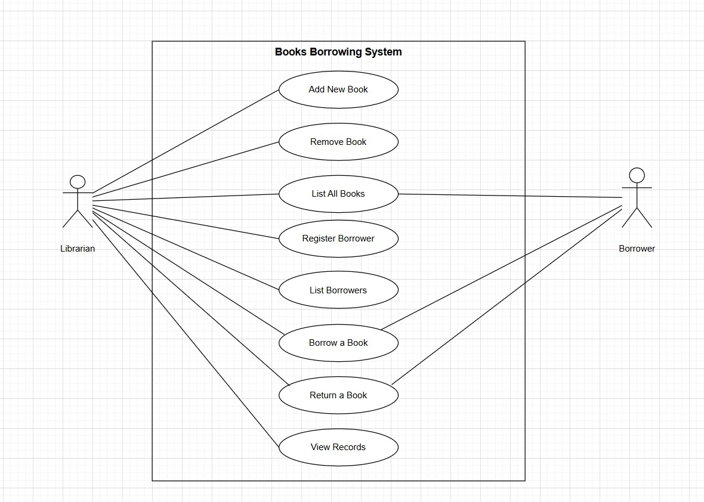
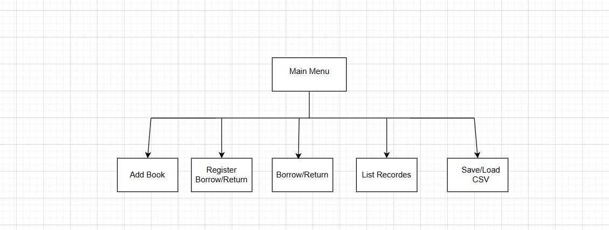

01

MD Jowel
AI250004
Group Memberfor Tunku Tun Aminah Library
public class BooksBorrowingSystem {
course = "BIK10503";
language = "Java";
design = "OOP + UML";
storage = "CSV Persistence";
modules = ["ui", "service", "model", "util"];
}Each member contributed to building, testing, documenting, and presenting the Books Borrowing System.
AI250004
Group Member
AI250042
Group MemberAI250032
Group MemberAI250002
Group MemberAI250034
Group MemberAI250022
Group MemberAI250036
Group MemberA command-line Java application that helps automate library operations for Tunku Tun Aminah Library.
Manage books, borrowers, and borrow / return transactions.
Object-Oriented Programming with modular packages.
CSV files keep data available after the program closes.

Manual library records create slow, inaccurate, and hard-to-track operations.
Staff cannot quickly know whether a book is available or borrowed.
Manual logs make it difficult to verify who borrowed which book.
Handwritten records are easier to lose, damage, or enter incorrectly.
Borrowing history and overdue tracking become difficult to analyze.
model → Book, Borrower, Record
service → LibrarySystem business logic
util → CsvHelper read / write operations
ui → Main menu with Scanner input
 UML Class Diagram
UML Class Diagram

Use Case Diagram CSV Storage Design
CSV Storage Design
1. Add Book → books.csv updated
2. Register Borrower → borrowers.csv updated
3. Borrow Book → record created + book unavailable
4. Return Book → return date saved + book available
5. List Records → borrowing history displayed
Data remains saved after program restart because books, borrowers, and records are stored in separate CSV files.
We developed a functional Java-based Books Borrowing System using OOP, CSV persistence, menu interaction, testing, and collaborative development.
We learned how UML diagrams guide code structure before implementation.
We practiced encapsulation, inheritance, classes, objects, and reusable methods.
We used CSV files, FileWriter, BufferedReader, and validation for persistence.
We divided tasks, tested features, and connected all modules into one system.
Dr. Nur Ariffin Bin Mohd Zin
GitHub: github.com/mohammad-jowel/bik10503_project